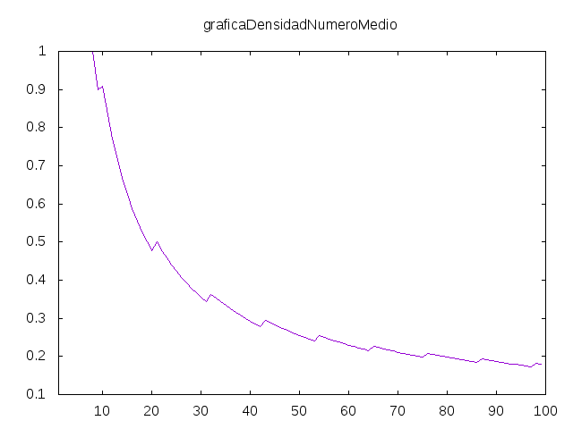
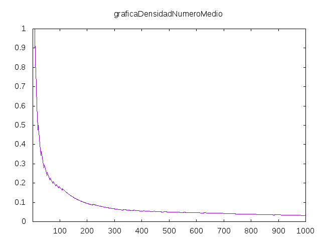

Número medio
Un número medio es número natural que es igual a la media aritmética de las permutaciones de sus dígitos. Por ejemplo, 370 es un número medio ya que las permutaciones de sus dígitos es 073, 037, 307, 370, 703 y 730 cuya media es 2220/6 que es igual a 370.
Definir las siguientes funciones
numeroMedio :: Integer -> Bool densidadesNumeroMedio :: [Double] graficaDensidadNumeroMedio :: Int -> IO ()
tales que
- (numeroMedio n) se verifica si n es un número medio. Por ejemplo,
λ> numeroMedio 370 True λ> numeroMedio 371 False λ> numeroMedio 485596707818930041152263374 True λ> filter numeroMedio [100..600] [111,222,333,370,407,444,481,518,555,592] λ> filter numeroMedio [3*10^5..6*10^5] [333333,370370,407407,444444,481481,518518,555555,592592]
- densidades es la lista cuyo elemento n-ésimo (empezando a contar en 1) es la densidad de números medios en el intervalo [1,n]; es decir, la cantidad de números medios menores o iguales que n dividida por n. Por ejemplo,
λ> mapM_ print (take 30 densidades) 1.0 1.0 1.0 1.0 1.0 1.0 1.0 1.0 1.0 0.9 0.9090909090909091 0.8333333333333334 0.7692307692307693 0.7142857142857143 0.6666666666666666 0.625 0.5882352941176471 0.5555555555555556 0.5263157894736842 0.5 0.47619047619047616 0.5 0.4782608695652174 0.4583333333333333 0.44 0.4230769230769231 0.4074074074074074 0.39285714285714285 0.3793103448275862 0.36666666666666664
- (graficaDensidadNumeroMedio n) dibuja la gráfica de las densidades de los intervalos [1,k] para k desde 1 hasta n. Por ejemplo, (graficaDensidadNumeroMedio 100) dibuja

y (graficaDensidadNumeroMedio 1000) dibuja

Soluciones
import Data.List (genericLength, permutations, foldl') import Test.QuickCheck import Graphics.Gnuplot.Simple -- 1ª definición de numeroMedio -- ============================ numeroMedio :: Integer -> Bool numeroMedio n = n == media (map digitosAnumero (permutations (digitos n))) -- (digitos n) es la lista de los dígitos de n. Por ejemplo, -- digitos 425 == [4,2,5] digitos :: Integer -> [Integer] digitos n = [read [c] | c <- show n] -- (digitosAnumero xs) es el número cuya lista de dígitos es xs. Por -- ejemplo, -- digitosAnumero [4,2,5] == 425 -- 1ª definición de digitosAnumero digitosAnumero1 :: [Integer] -> Integer digitosAnumero1 = aux . reverse where aux [] = 0 aux (x:xs) = x + 10 * aux xs -- 1ª definición de digitosAnumero digitosAnumero2 :: [Integer] -> Integer digitosAnumero2 = foldl' (\x y -> 10*x+y) 0 -- Comparación de eficiencia de definiciones de digitosAnumero -- λ> length (show (digitosAnumero1 (replicate (10^5) 5))) -- 100000 -- (5.07 secs, 4,317,349,968 bytes) -- λ> length (show (digitosAnumero2 (replicate (10^5) 5))) -- 100000 -- (0.67 secs, 4,288,054,592 bytes) -- Se usará la 2ª definición de digitosAnumero digitosAnumero :: [Integer] -> Integer digitosAnumero = digitosAnumero2 -- (media xs) es la media aritmética de la lista xs (se supone que su -- valor es entero). Por ejemplo, -- media [370,730,73,703,37,307] == 370 media :: [Integer] -> Integer media xs = sum xs `div` genericLength xs -- 2ª definición de numeroMedio -- ============================ numeroMedio2 :: Integer -> Bool numeroMedio2 n = (10^k-1)*s == 9*k*n where xs = digitos n k = genericLength xs s = sum xs -- Equivalencia de las definiciones de numeroMedio -- =============================================== -- La propiedad es prop_numeroMedio :: Positive Integer -> Bool prop_numeroMedio (Positive n) = numeroMedio n == numeroMedio2 n -- La comprobación es -- λ> quickCheck prop_numeroMedio -- +++ OK, passed 100 tests. -- Comparación de eficiencia de las definiciones de numeroMedio -- ============================================================ -- λ> filter numeroMedio [10000..20000] -- [11111] -- (1.74 secs, 1,500,858,904 bytes) -- λ> filter numeroMedio2 [10000..20000] -- [11111] -- (0.11 secs, 213,060,784 bytes) -- Definición de densidadesNumeroMedio -- =================================== densidadesNumeroMedio :: [Double] densidadesNumeroMedio = [genericLength (filter numeroMedio2 [1..n]) / fromIntegral n | n <- [1..]] -- Definición de graficaDensidadNumeroMedio -- ======================================== graficaDensidadNumeroMedio :: Int -> IO () graficaDensidadNumeroMedio n = plotList [ Title ("graficaDensidadNumeroMedio") , Key Nothing -- , PNG ("Numero_medio_" ++ show n ++ ".png" ) , XRange (1, fromIntegral n)] (take n densidadesNumeroMedio)